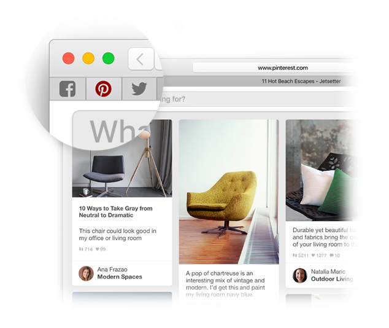

Cari kegemaran.
Klik medan Carian Pintar untuk akses laman web kegemaran anda. Klik laman untuk pergi ke sana.

Pin laman.
Seret tab ke kiri untuk pin laman dan ia kekal terletak dalam bar tab.
Kongsi pautan.
Klik  untuk menghantar pautan dalam e-mel atau teks, berkongsinya pada Facebook atau Twitter, atau tambahnya ke Nota.
untuk menghantar pautan dalam e-mel atau teks, berkongsinya pada Facebook atau Twitter, atau tambahnya ke Nota.